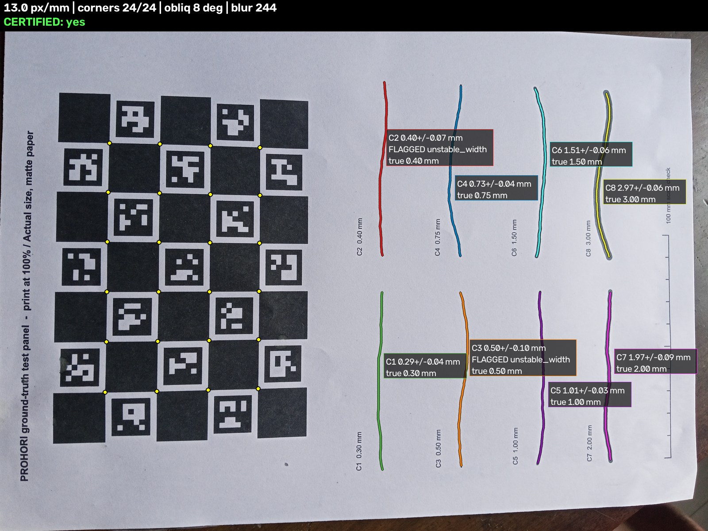
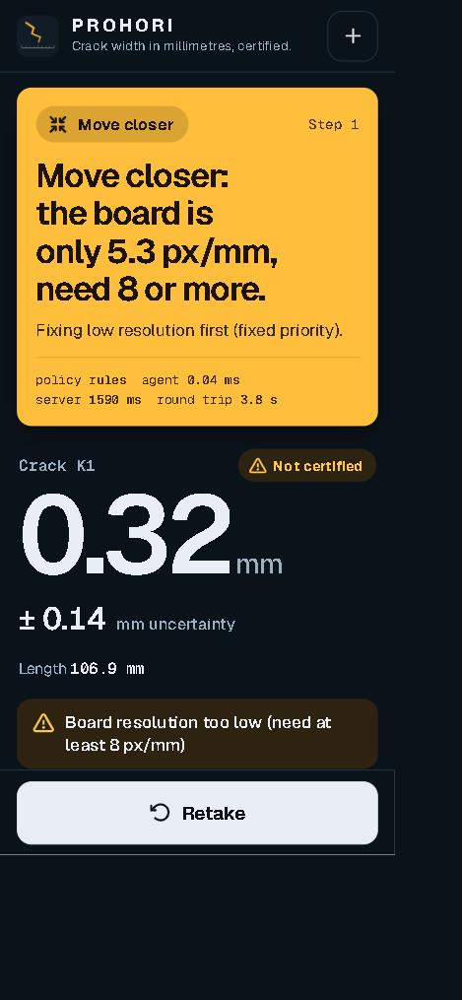
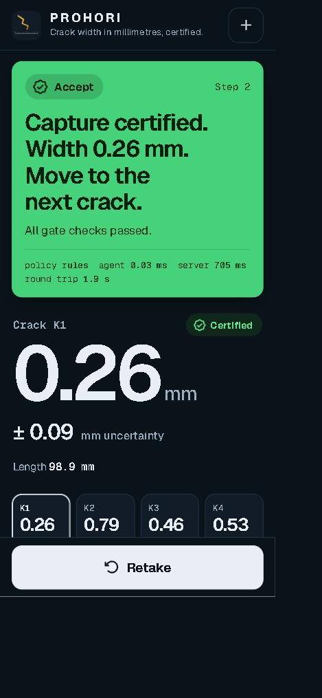
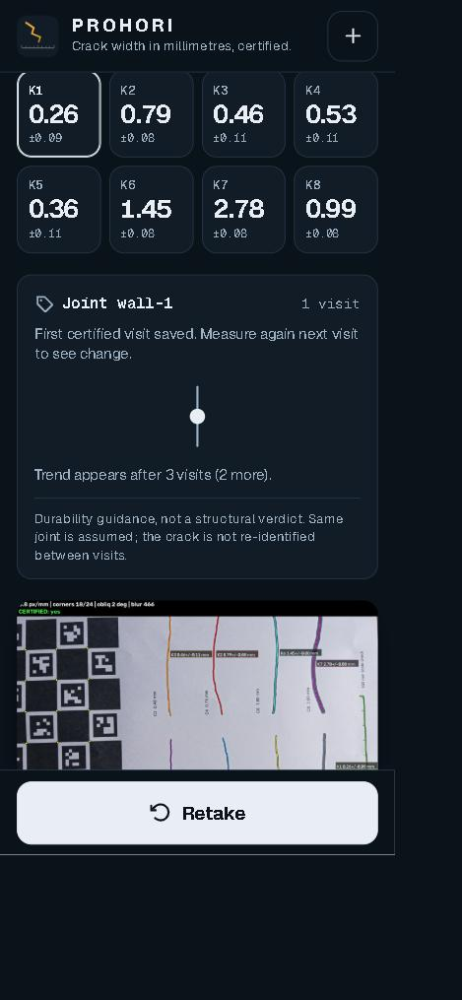
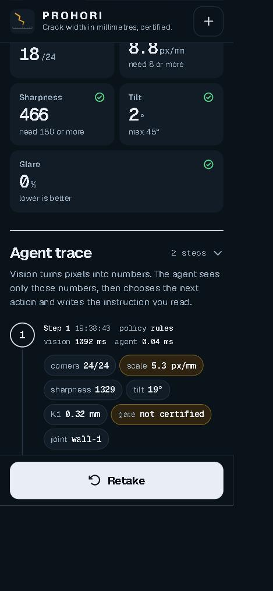
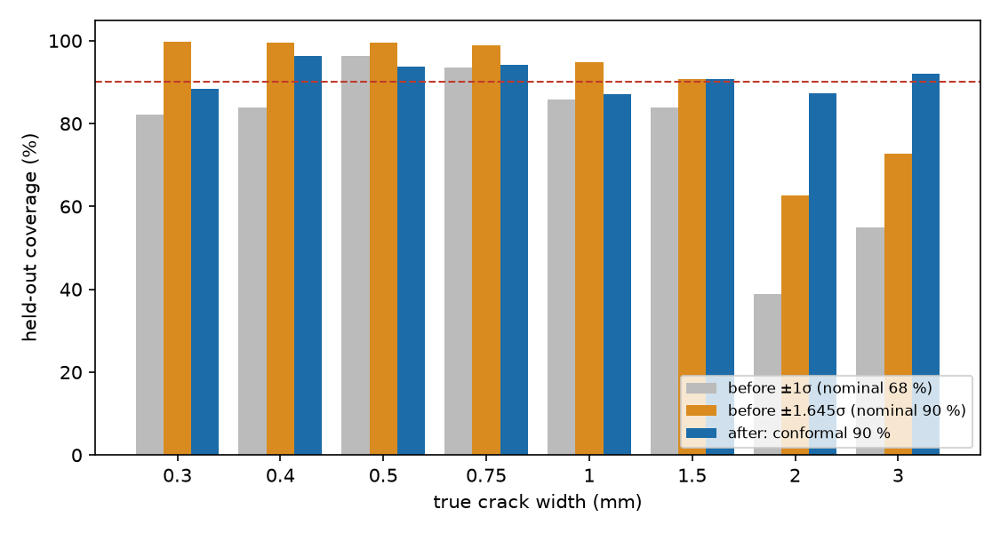
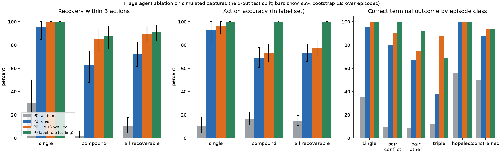
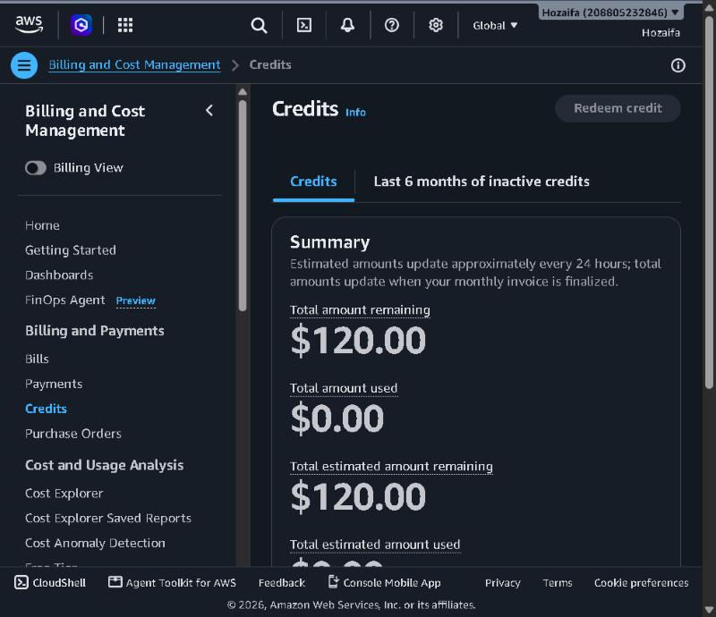

What Prohori does. You tape a printed ChArUco board next to a concrete crack and take a phone photo. OpenCV finds the board, corrects for camera angle and scale, and reports the crack width in millimetres with an error range. If the photo can't support a trustworthy number (too far, blurred, tilted, glare), Prohori says so and tells the user exactly how to retake it. Crack width is what engineers use to decide whether concrete needs repair, and today it is mostly judged by eye with a plastic crack card.
Live app: https://184-194-241-186.sslip.io (open it on a phone and tap Demo samples to try it without a board).
| Component | What it does | Status |
|---|---|---|
| Measurement pipeline | ChArUco detection, solvePnP pose, homography rectification to a known px/mm, crack location, width at many stations along each crack, per-crack uncertainty. About 1.5 s per 12 MP photo on the server. | Live |
| Quality gate (calibrated) | Learns when a measurement can be trusted, from sharpness, scale, tilt, glare and mask checks. The threshold is set with conformal risk control so the wrong-but-certified rate stays near a 5% target. Each width gets a conformal 90% range. | Built, tested deploys this week |
| Triage agent | After each photo it picks one of 7 actions: accept, accept with a wider range, move closer, hold steadier, fix the lighting, reposition the board, or give up and log. It sees only OpenCV's numbers, never the image. Uses Amazon Bedrock (Nova Lite) when selected; otherwise a free rules policy. Falls back to rules on any error. | Live |
| Phone web app | Installable web app: capture, upload, demo samples, joint ID, big mm result with range, per-crack tiles, photo quality panel, and a step-by-step agent trace. | Live |
| History and alerts | Every visit to a joint is stored. A change is flagged only when it is larger than the combined measurement uncertainty; a trend line appears after 3 visits. Real changes email an engineer through Amazon SNS with an "I have reviewed this" approval step. | Live |
| Privacy | Faces are blurred with OpenCV's YuNet detector before any photo is saved. If the face model is missing, nothing is stored. | Live |
| Evaluation tooling | Width benchmark on krkCMd, agent ablation simulator, a photoreal synthetic crack generator with exact ground truth, and a loader plus metrics for 10 public crack segmentation datasets. | Built |





All numbers come from files in our repository (eval/results/). We report held-out ("out-of-sample") numbers where we have them, and say where we don't.
29 photos of the printed test panel; the board was found in 23 and 168 crack widths were measured.
| Set | Cracks | Avg. error, tuned on all photos | Avg. error, each photo held out |
|---|---|---|---|
| Cracks the gate certifies | 85 | 0.045 mm | 0.048 mm |
| All measured cracks | 168 | 0.101 mm | 0.104 mm |
| Uncertified cracks | 83 | 0.159 mm | n/a |
Certified cracks are about 3.5 times more accurate than uncertified ones (3.6% vs 18.3% relative error), which is what the gate is for.

We wrote the test plan and pass bar before running it, then tested on 100 held-out simulated capture problems. Success = a usable photo within 3 actions.
| Problem type | Random | Fixed rules | Bedrock agent (Nova Lite) |
|---|---|---|---|
| One thing wrong (20 cases) | 30% | 95% | 100% |
| Several things wrong at once (48 cases) | 2% | 62% | 85% |

What we learned, honestly: a carefully hand-written rule reached 88% on the same cases, so the agent's real edge over a well-tuned rule set is small. We will publish that result as it is. It is also why the free rules policy is the default and the AI agent is an option.
This benchmark showed how image resolution limits accuracy: cracks of 0.30 to 0.50 mm need about 20 px/mm for errors near 0.05 mm, and our width formula was not yet good enough at low resolution. A simpler estimator reached 13 µm average error at full resolution. These findings directly changed the gate's resolution rules, and the estimator rework is on the remaining-work list.
Prohori runs as a small production service in us-east-1. Every part below is deployed and working today; the live server answers:
GET https://184-194-241-186.sslip.io/health (checked 20 Oct 2026)
{"status":"ok","opencv":"5.0.0","arch":"aarch64","instance":"t4g.small","version":"b090be5",
"impl":{"measure":"prohori.measure","agent":"prohori.agent","store":"prohori.store"},
"redaction":"yunet","escalation_topic":true}
| AWS service | How Prohori uses it |
|---|---|
| EC2 Graviton t4g.small | Runs the OpenCV 5 measurement API (Ubuntu 24.04 arm64, encrypted gp3 disk, IMDSv2, Elastic IP, Caddy with automatic HTTPS). |
| Amazon Bedrock | Nova Lite powers the optional triage agent through the Converse API with one forced tool call. Daily cap of 200 calls; rules fallback. |
| DynamoDB | Every agent step and every visit to a crack (pay-per-request, encrypted, 90-day expiry). |
| S3 | Evidence photos after face redaction (private bucket, public access blocked, encrypted). |
| SNS | Emails an engineer when a crack really changes; approval by POST so email link scanners can't approve. |
| IAM, SSM, Budgets | Least-privilege instance role, SSM access, and a $25/month budget alarm (50%, 80%, 100% forecast). |
Short answer: our AWS costs so far are close to zero, on purpose. We built the whole stack to run cheaply first, so the grant can pay for the expensive parts at the end (GPU training, the Graviton4 benchmark, and keeping the service online for judging).
| Use | Est. cost |
|---|---|
| GPU training of the learned crack finder on public datasets (EC2 g-family GPU instance, about 40 h) | ~$25 |
| Graviton4 (c8g) benchmark: stock OpenCV vs OpenCV COOL build, speed and accuracy match (we upgrade the account to the Paid plan for this, since the Free plan blocks Marketplace images and credits don't cover Marketplace fees) | ~$20 |
| Keep the live service up through judging and a 3-month pilot after the Free Tier credits run out (t4g.small + public IPv4 + disk, about $17/month) | ~$55 |
| Bedrock: re-run the agent study on the new gate, demo video, judges' traffic | ~$10 |
| Field-test traffic (S3, DynamoDB, SNS) and buffer for Paid-plan charges | ~$40 |
| Total | ~$150 |
Estimates use us-east-1 on-demand list prices. Actual spend will be reported in the final submission.

| Task | Detail | Target |
|---|---|---|
| Deploy calibrated gate + updated agent | Built and tested (206 tests pass); the live server still runs the demo build so the check-in demo stayed stable. | 21 Oct |
| Learned crack finder | Our classical crack locator is 20 to 45 F1 points behind published trained models on public datasets (DeepCrack, Crack500, TUT), so we will train a small segmentation model on AWS GPU and compare it on the same harness. | 23 Oct |
| Graviton4 + OpenCV COOL benchmark | Speed per photo on c8g vs t4g, and proof that widths are identical with COOL. Runs after we upgrade the account to the Paid plan. | 24 Oct |
| Width estimator rework | Apply the krkCMd findings to improve thin-crack accuracy at low px/mm, re-tuned out-of-sample. | 24 Oct |
| Real-wall validation | Photos of real cracks on walls in Dhaka, plus a modified panel to demonstrate multi-visit trend alerts. | 25 Oct |
| Submission | Write-up, demo video, public results, Devpost entry. | 26 Oct |
Thank you for the grant and for the flexibility on the check-in. Live app: 184-194-241-186.sslip.io · Contact: 20hozaifa02@gmail.com